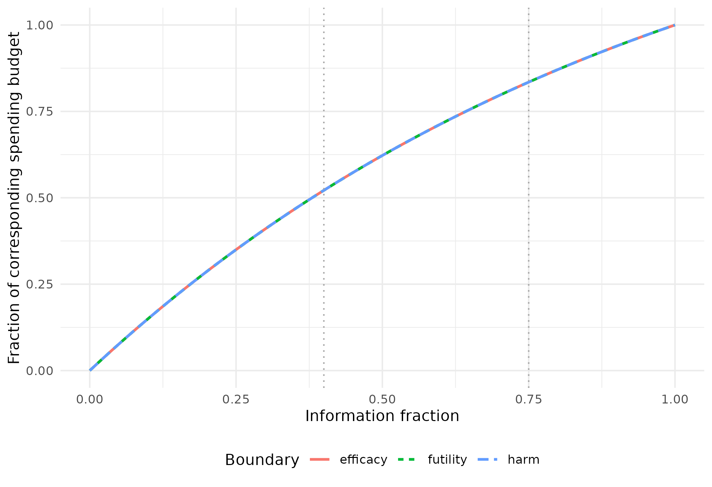

Calibrating spending to effects at interim bounds
Source:vignettes/EffectSpending.Rmd
EffectSpending.RmdSpecify an effect; retain a spending function
gsEffectSpending() selects spending parameters so that approximate observed treatment effects at specified interim efficacy, futility or harm bounds match natural-scale targets. A single function supports one boundary or a joint fit. It builds on the established gsDesign boundary and probability calculations.
This answers a different question from CP, PP or conditional assurance: “What observed treatment effect should correspond to this stopping boundary?” The result still specifies spending functions, rather than only isolated boundary values. Planned power and nominal error budgets are retained by recalculating information. Maximum sample size may therefore change.
Effects at bounds are normal-theory approximations, not bias-adjusted sequential estimates. The candidate’s information must be used in each transformation. A target cannot generally be converted to a fixed Z boundary once, using the original sample size.
Joint efficacy, futility and harm targets for normal means
Consider equal allocation, a common standard deviation of 1, and an alternative mean difference of 0.2. Positive differences favor the experimental treatment. Information fractions are 0.4 and 0.75, with 90% power and nonbinding futility/harm (test type 8).
n_fixed <- nNormal(delta1 = .2, sd = 1)
x <- gsDesign(
k = 3, test.type = 8, n.fix = n_fixed, delta1 = .2,
timing = c(.4, .75), sfu = sfHSD, sfupar = 0,
sfl = sfHSD, sflpar = 0, sfharm = sfHSD, sfharmparam = 0,
astar = .05
)
n_fixed
#> [1] 1050.742The following targets were chosen near a known feasible configuration to illustrate joint calibration, not as clinical recommendations. Specify them directly as differences in means, not as Z values or standardized effects.
fit <- gsEffectSpending(
x,
target_effect = c(.185346, .064696, -.161755),
i = c(1, 1, 1),
bound = c("efficacy", "futility", "harm"),
spending = list(efficacy = sfHSD, futility = sfHSD, harm = sfHSD),
effect = list(endpoint = "mean_difference"),
control = list(effect_tol = 1e-5)
)
knitr::kable(fit$effectSpending$targets, digits = 6)| bound | i | target_effect | achieved_effect | residual |
|---|---|---|---|---|
| efficacy | 1 | 0.185346 | 0.185346 | 0 |
| futility | 1 | 0.064696 | 0.064696 | 0 |
| harm | 1 | -0.161755 | -0.161755 | 0 |
fit$effectSpending$free_parameters
#> $efficacy
#> [1] 0.9999656
#>
#> $futility
#> [1] 1
#>
#> $harm
#> [1] 1.000015Efficacy requires evidence of benefit; futility stops for an insufficiently promising result; harm is further in the unfavorable direction. These are three targets on the same endpoint scale. Their numerical values and clinical interpretation must be assessed together.
Fitting one boundary and then another need not preserve the first match: information and boundaries are coupled. The joint fit checks all requested effects simultaneously.
Independent reconstruction and verification
replay <- do.call(gsDesign, fit$effectSpending$replay)
achieved <- gsDelta(
c(replay$upper$bound[1], replay$lower$bound[1], replay$harm$bound[1]),
i = c(1, 1, 1), x = replay
)
stopifnot(max(abs(achieved - fit$effectSpending$targets$target_effect)) < 1e-5)
p <- gsProbability(d = replay, theta = c(0, replay$delta))
knitr::kable(data.frame(
Quantity = c("Fixed-design N", "Reference maximum N", "Fitted maximum N",
"Inflation over fixed design (%)", "Actual type I error",
"Power at planned alternative"),
Value = c(n_fixed, tail(x$n.I, 1), tail(replay$n.I, 1),
100 * (tail(replay$n.I, 1) / n_fixed - 1),
sum(p$upper$prob[, 1]), sum(p$upper$prob[, 2]))
), digits = 4)| Quantity | Value |
|---|---|
| Fixed-design N | 1050.7423 |
| Reference maximum N | 1321.2665 |
| Fitted maximum N | 1441.1783 |
| Inflation over fixed design (%) | 37.1581 |
| Actual type I error | 0.0225 |
| Power at planned alternative | 0.9000 |
Actual type I error with lower stopping enforced can differ from the nominal efficacy budget. Check the design’s binding/nonbinding conventions, not merely its stored alpha. A successful effect match also does not establish that its sample-size inflation is acceptable; a practical limit such as 20% over a fixed design may be part of design selection.
Sample sizes here are continuous planning values. After rounding, recheck effects and operating characteristics.
All bounds, not only the targeted interim
bounds <- data.frame(
Analysis = seq_len(replay$k), N = replay$n.I,
Efficacy_effect = gsDelta(replay$upper$bound, seq_len(replay$k), replay),
Futility_effect = gsDelta(replay$lower$bound, seq_len(replay$k), replay),
Harm_effect = gsDelta(replay$harm$bound, seq_len(replay$k), replay)
)
knitr::kable(bounds, digits = 4)| Analysis | N | Efficacy_effect | Futility_effect | Harm_effect |
|---|---|---|---|---|
| 1 | 576.4713 | 0.1853 | 0.0647 | -0.1618 |
| 2 | 1080.8837 | 0.1380 | 0.1037 | -0.1194 |
| 3 | 1441.1783 | 0.1231 | 0.1231 | -0.1063 |
gsBoundSummary(replay, exclude = "B-value", digits = 4)
#> Analysis Value Harm Futility Efficacy
#> IA 1: 40% Z -1.9419 0.7767 2.2251
#> N: 577 p (1-sided) 0.9739 0.2187 0.0130
#> ~delta at bound -0.1618 0.0647 0.1853
#> Spending 0.0261 0.0522 0.0130
#> CP 0.0000 0.0724 0.9473
#> CP H1 0.0071 0.6380 0.9654
#> PP 0.0000 0.1656 0.8585
#> P(Cross) if delta=0 0.0261 0.7552 0.0130
#> P(Cross) if delta=0.2 0.0000 0.0521 0.5698
#> IA 2: 75% Z -1.9622 1.7051 2.2688
#> N: 1081 p (1-sided) 0.9751 0.0441 0.0116
#> ~delta at bound -0.1194 0.1037 0.1380
#> Spending 0.0157 0.0313 0.0078
#> CP 0.0000 0.2315 0.7150
#> CP H1 0.0000 0.5714 0.8762
#> PP 0.0000 0.2622 0.6877
#> P(Cross) if delta=0 0.0261 0.9310 0.0202
#> P(Cross) if delta=0.2 0.0000 0.0835 0.8480
#> Final Z -2.0185 2.3358 2.3358
#> N: 1442 p (1-sided) 0.9782 0.0098 0.0098
#> ~delta at bound -0.1063 0.1231 0.1231
#> Spending 0.0083 0.0165 0.0041
#> P(Cross) if delta=0 0.0261 0.9514 0.0225
#> P(Cross) if delta=0.2 0.0000 0.1000 0.9000CP, CP H1 and PP in the summary give additional perspectives on these boundaries; none was directly targeted. The default PP prior is the broad normal prior used by gsBoundSummary(), centered halfway between the null and planned alternative on the standardized-effect scale.
Compare the fitted spending shapes
The three spending budgets have different interpretations and totals. The graph uses fractions of each budget to compare shape, not to imply that alpha, beta and harm probabilities are interchangeable.
times <- seq(0, 1, length.out = 201)
slots <- c(efficacy = "upper", futility = "lower", harm = "harm")
budget <- c(efficacy = replay$alpha, futility = replay$beta, harm = replay$astar)
curves <- do.call(rbind, lapply(names(slots), function(b) {
s <- replay[[slots[[b]]]]
data.frame(Time = times,
Fraction = s$sf(budget[b], times, s$param)$spend / budget[b],
Boundary = b)
}))
ggplot(curves, aes(Time, Fraction, colour = Boundary, linetype = Boundary)) +
geom_line(linewidth = .9) +
geom_vline(xintercept = c(.4, .75), linetype = 3, colour = "grey65") +
labs(x = "Information fraction", y = "Fraction of corresponding spending budget") +
theme_minimal() + theme(legend.position = "bottom")
These illustrative targets are close to the same HSD shape for all three boundaries, so the normalized curves nearly coincide. Other clinical targets can produce different shapes.
Spending functions retain their usefulness when information accrues at different times or the monitoring plan changes. Preserve spending already used and reevaluate the revised design: the original effect targets and power are not guaranteed to remain exact. This flexibility does not authorize unrestricted refitting after observing unblinded results.
Two-parameter futility spending for a risk difference
For a response endpoint, let the control response probability be 0.1 and experimental response probability 0.2. The alternative risk difference is 0.1. nBinomial() supplies the fixed sample size; delta0 and delta1 define the natural-scale interpretation.
n_binomial <- nBinomial(p1 = .1, p2 = .2)
rd <- gsDesign(
k = 3, test.type = 4, timing = c(.4, .75),
n.fix = n_binomial, delta0 = 0, delta1 = .1,
sfl = sfLogistic, sflpar = c(0, 1)
)
# Use attainable reference effects to demonstrate parameter recovery.
rd_targets <- gsDelta(rd$lower$bound[1:2], 1:2, rd)
rd_fit <- gsEffectSpending(
rd, rd_targets, i = 1:2, spending = sfLogistic,
effect = list(endpoint = "risk_difference"),
control = list(start = c(-.1, 1.1))
)
knitr::kable(rd_fit$effectSpending$targets, digits = 5)| bound | i | target_effect | achieved_effect | residual |
|---|---|---|---|---|
| futility | 1 | 0.02122 | 0.02122 | 0 |
| futility | 2 | 0.04724 | 0.04724 | 0 |
knitr::kable(data.frame(
Fixed_N = n_binomial, Maximum_N = tail(rd_fit$n.I, 1),
Inflation_percent = 100 * (tail(rd_fit$n.I, 1) / n_binomial - 1)
), digits = 2)| Fixed_N | Maximum_N | Inflation_percent |
|---|---|---|
| 531.71 | 624.73 | 17.49 |
One target per free parameter is required for each selected family. Piecewise linear spending is also supported, with knots fixed at the selected spending times. Equal numbers of parameters and targets do not prove uniqueness.
The risk-difference mapping is approximate: it does not identify an exact observed 2-by-2 table. Invalid risk-difference targets are rejected, and out-of-range achieved approximations are not silently clipped.
Hazard ratios require explicit event-scale metadata
An HR transformation must distinguish event information from patient sample size. Here ratio = 2 is experimental/control allocation, the null HR is 1.1 and the alternative HR is 0.7. The canonical drift per square root of total events is determined by the HR contrast and allocation.
hr_effect <- list(information = "events", ratio = 2, hr0 = 1.1, hr1 = .7)
delta_events <- abs(log(.7 / 1.1)) * sqrt(2) / 3
hr_reference <- gsDesign(k = 3, test.type = 4, delta = delta_events, sflpar = 1)
hr_for_summary <- hr_reference
hr_for_summary$hr <- .7
hr_for_summary$hr0 <- 1.1
hr_target <- gsHR(hr_reference$lower$bound[1], 1, hr_for_summary, ratio = 2)
hr_fit <- gsEffectSpending(
hr_reference, hr_target, scale = "hr", effect = hr_effect,
control = list(start = 0)
)
knitr::kable(hr_fit$effectSpending$targets, digits = 5)| bound | i | target_effect | achieved_effect | residual |
|---|---|---|---|---|
| futility | 1 | 1.01308 | 1.01308 | 0 |
data.frame(
Analysis = seq_len(hr_fit$k), Events = hr_fit$n.I,
Futility_HR = gsHR(hr_fit$lower$bound, seq_len(hr_fit$k), hr_fit, ratio = 2)
) |> knitr::kable(digits = 4)| Analysis | Events | Futility_HR |
|---|---|---|
| 1 | 94.8372 | 1.0131 |
| 2 | 189.6744 | 0.9005 |
| 3 | 284.5115 | 0.8555 |
The function checks the event-scale drift against the supplied HR metadata. It also supports an alternative HR above the null; the effect direction is explicit, rather than assuming HR below 1 is always the favorable direction.
This is a statistical event-driven design, not an accrual/calendar-time survival design. Direct gsSurv()/gsSurvCalendar() objects remain unsupported. An accrual model and its reconstruction require separate validation.
For risk ratios, use scale = “rr” with correctly specified log-ratio delta0/delta1 reference metadata, but supply target_effect as a ratio.
Diagnostics and interpretation
fit$effectSpending[c("local_rank", "locally_identified", "condition_number",
"harm_futility_coincidence")]
#> $local_rank
#> [1] 3
#>
#> $locally_identified
#> [1] TRUE
#>
#> $condition_number
#> [1] 2.234075
#>
#> $harm_futility_coincidence
#> integer(0)The numerical Jacobian describes local sensitivity only. A capped harm bound may be unchanged when its spending parameter changes, and different parameter sets may satisfy the same targets. Rank/conditioning diagnostics and harm/futility coincidence help identify such concerns, but do not establish global uniqueness.
The effect tolerance is in natural units, not probability units. Failed searches return diagnostic errors, not a certificate of mathematical infeasibility. Review clinical relevance, prior-independent operating characteristics, sample size, and every boundary before choosing a design.
Built on established computational tools
The new interface reuses gsDesign(), spending families, effect-at-bound transformations and joint probability calculations. Its innovation is the clinical-scale calibration request and coordinated parameter search. Tests reconstruct designs and verify their properties using these existing tools, including joint targets, ratio direction and allocation, and error handling.
This is the same development principle as the CP/PP and assurance methods: rapid AI-assisted development on top of established computational tools, with independently checkable statistical properties. For related methods, see CP/PP spending and assurance/POS spending.